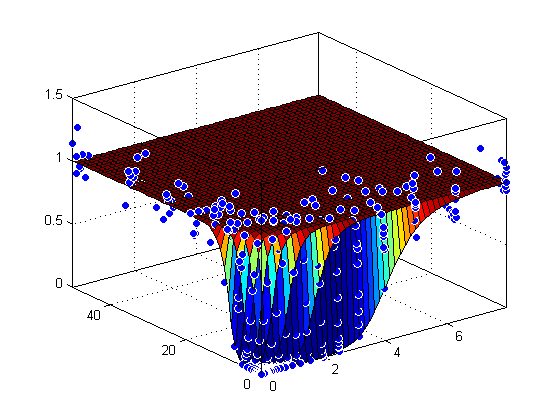
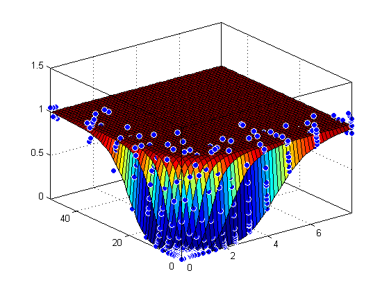
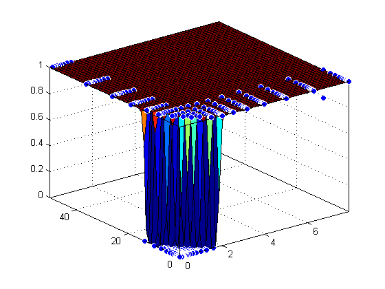
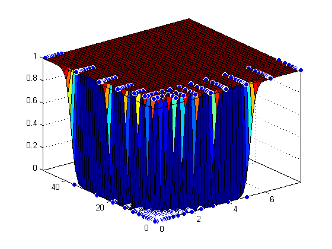

Surface Fitting With Custom Equations to Biopharmaceutical Data
This example shows how to use Curve Fitting Toolbox™ to fit response surfaces to some anesthesia data to analyze drug interaction effects. Response surface models provide a good method for understanding the pharmacodynamic interaction behavior of drug combinations.
This data is based on the results in this paper: Kern SE, Xie G, White JL, Egan TD. Opioid-hypnotic synergy: A response surface analysis of propofol-remifentanil pharmacodynamic interaction in volunteers. Anesthesiology 2004; 100: 1373-81.
Anesthesia is typically at least a two-drug process, consisting of an opioid and a sedative hypnotic. This example uses Propofol and Reminfentanil as drug class prototypes. Their interaction is measured by four different measures of the analgesic and sedative response to the drug combination. Algometry, Tetany, Sedation, and Laryingoscopy comprise the four measures of surrogate drug effects at various concentration combinations of Propofol and Reminfentanil.
The following code, using Curve Fitting Toolbox methods, reproduces the interactive surface building with the Curve Fitting Tool described in "Biopharmaceutical Drug Interaction Surface Fitting".
Contents
Load Data
Load the data from file.
data = importdata( 'OpioidHypnoticSynergy.txt' );
Propofol = data.data(:,1);
Remifentanil = data.data(:,2);
Algometry = data.data(:,3);
Tetany = data.data(:,4);
Sedation = data.data(:,5);
Laryingoscopy = data.data(:,6);
Create the Model Fit Type
You can use the fittype function to define the model from the paper, where CA and CB are the drug concentrations, and IC50A, IC50B, alpha, and n are the coefficients to be estimated. Create the model fit type.
ft = fittype( 'Emax*( CA/IC50A + CB/IC50B + alpha*( CA/IC50A ) * ( CB/IC50B ) )^n /(( CA/IC50A + CB/IC50B + alpha*( CA/IC50A ) * ( CB/IC50B ) )^n + 1 )', ... 'independent', {'CA', 'CB'}, 'dependent', 'z', 'problem', 'Emax' )
ft =
General model:
ft(IC50A,IC50B,alpha,n,Emax,CA,CB) = Emax*( CA/IC50A + CB/IC50B + alpha*(
CA/IC50A ) * ( CB/IC50B ) )^n /(( CA/IC50A + CB/IC50B
+ alpha*( CA/IC50A ) * ( CB/IC50B ) )^n + 1 )
Assume Emax = 1 because the effect output is normalized.
Emax = 1;
Set Fit Options
Set fit options for robust fitting, bounds, and start points.
opts = fitoptions( ft );
opts.Lower = [0, 0, -5, -0];
opts.Robust = 'LAR';
opts.StartPoint = [0.0089, 0.706, 1.0, 0.746];
Fit and Plot a Surface for Algometry
[f, gof] = fit( [Propofol, Remifentanil], Algometry, ft,... opts, 'problem', Emax ) plot( f, [Propofol, Remifentanil], Algometry );
Success, but fitting stopped because change in residuals less than tolerance (TolFun).
General model:
f(CA,CB) = Emax*( CA/IC50A + CB/IC50B + alpha*( CA/IC50A ) * ( CB/IC50B
) )^n /(( CA/IC50A + CB/IC50B + alpha*( CA/IC50A )
* ( CB/IC50B ) )^n + 1 )
Coefficients (with 95% confidence bounds):
IC50A = 4.149 (4.123, 4.174)
IC50B = 9.044 (8.971, 9.118)
alpha = 8.502 (8.316, 8.688)
n = 8.289 (8.131, 8.446)
Problem parameters:
Emax = 1
gof =
sse: 0.0842
rsquare: 0.9991
dfe: 393
adjrsquare: 0.9991
rmse: 0.0146
 Fit a Surface to Tetany
Reuse the same fittype to create a response surface for tetany.
[f, gof] = fit( [Propofol, Remifentanil], Tetany, ft, opts, 'problem', Emax )
plot( f, [Propofol, Remifentanil], Tetany );
General model:
f(CA,CB) = Emax*( CA/IC50A + CB/IC50B + alpha*( CA/IC50A ) * ( CB/IC50B
) )^n /(( CA/IC50A + CB/IC50B + alpha*( CA/IC50A )
* ( CB/IC50B ) )^n + 1 )
Coefficients (with 95% confidence bounds):
IC50A = 4.544 (4.522, 4.567)
IC50B = 21.22 (21.04, 21.4)
alpha = 14.94 (14.67, 15.21)
n = 6.132 (6.055, 6.209)
Problem parameters:
Emax = 1
gof =
sse: 0.0537
rsquare: 0.9993
dfe: 393
adjrsquare: 0.9993
rmse: 0.0117
 Fit a Surface to Sedation
[f, gof] = fit( [Propofol, Remifentanil], Sedation, ft, opts, 'problem', Emax )
plot( f, [Propofol, Remifentanil], Sedation );
General model:
f(CA,CB) = Emax*( CA/IC50A + CB/IC50B + alpha*( CA/IC50A ) * ( CB/IC50B
) )^n /(( CA/IC50A + CB/IC50B + alpha*( CA/IC50A )
* ( CB/IC50B ) )^n + 1 )
Coefficients (with 95% confidence bounds):
IC50A = 1.843 (1.838, 1.847)
IC50B = 13.7 (13.67, 13.74)
alpha = 1.986 (1.957, 2.015)
n = 44.27 (42.56, 45.98)
Problem parameters:
Emax = 1
gof =
sse: 0.0574
rsquare: 0.9994
dfe: 393
adjrsquare: 0.9994
rmse: 0.0121
 Fit a Surface to Laryingoscopy
[f, gof] = fit( [Propofol, Remifentanil], Laryingoscopy, ft, opts, 'problem', Emax )
plot( f, [Propofol, Remifentanil], Laryingoscopy );
General model:
f(CA,CB) = Emax*( CA/IC50A + CB/IC50B + alpha*( CA/IC50A ) * ( CB/IC50B
) )^n /(( CA/IC50A + CB/IC50B + alpha*( CA/IC50A )
* ( CB/IC50B ) )^n + 1 )
Coefficients (with 95% confidence bounds):
IC50A = 5.192 (5.177, 5.207)
IC50B = 37.77 (37.58, 37.97)
alpha = 19.67 (19.48, 19.86)
n = 37 (35.12, 38.87)
Problem parameters:
Emax = 1
gof =
sse: 0.1555
rsquare: 0.9982
dfe: 393
adjrsquare: 0.9982
rmse: 0.0199
